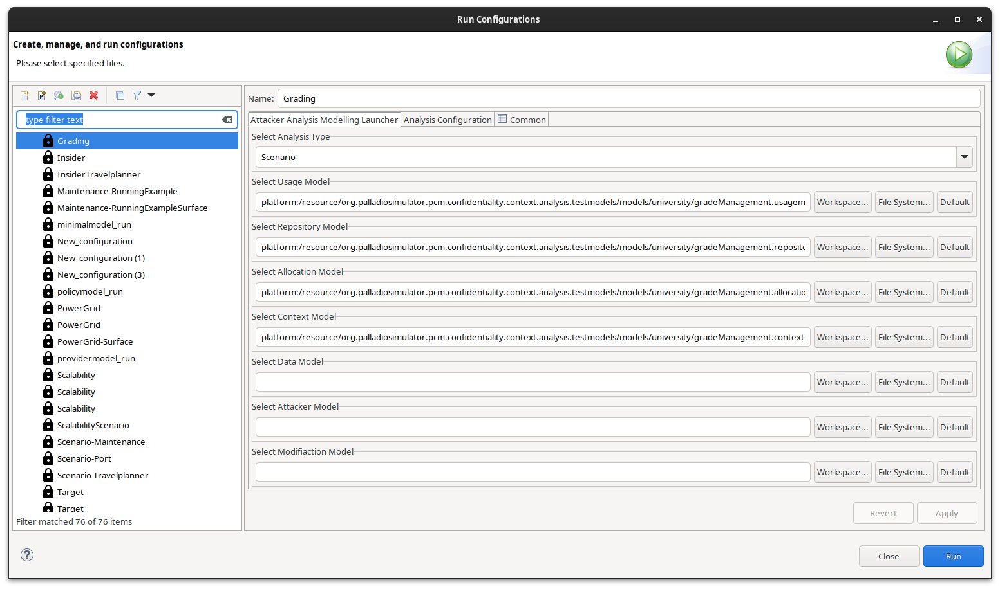
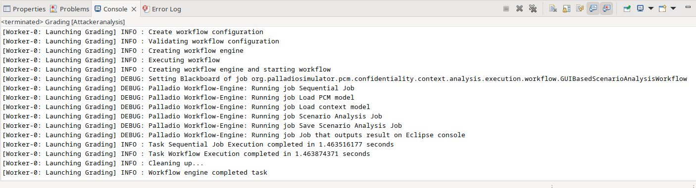
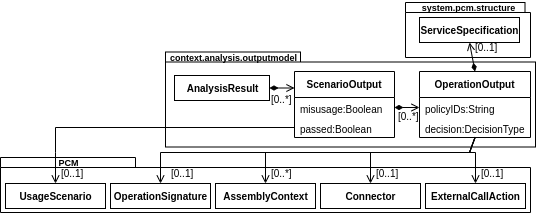
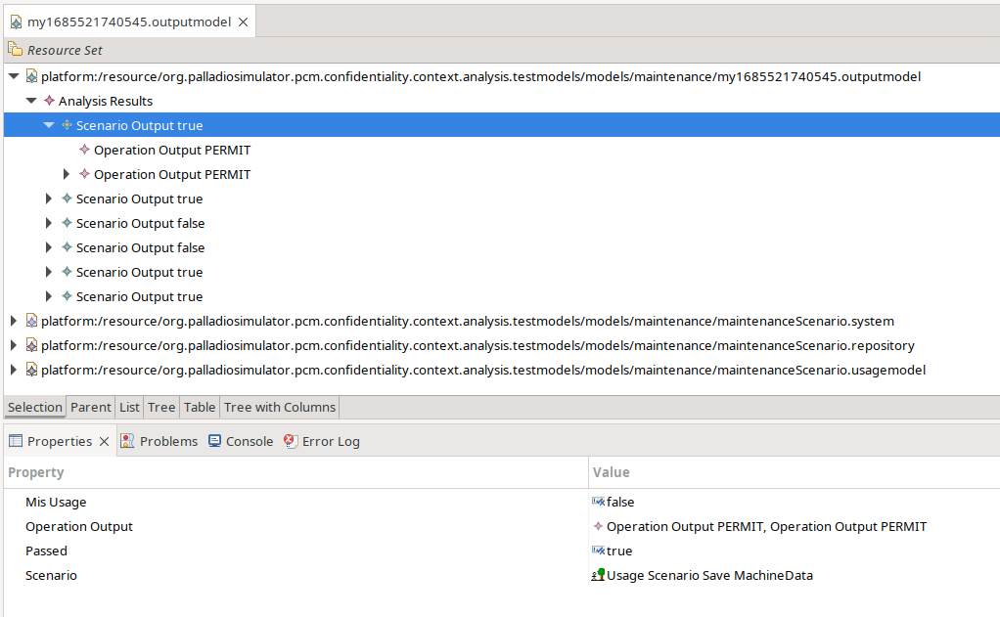

Analyzing Scenario-based Access Control Policies
Analysis Execution
The analysis can be started via an Eclipse launch configuration. The launch configuration name is Attackeranalysis. It can be created in Eclipse by clicking Run->Run Configurations. This opens a dialog similar to the example image below. There select Attackeranalysis (left side). This creates a new launch config for the attacker analysis. For the scenario-based access usage analysis select as analysis type Scenario. Afterwards select the software architecture models you want to analyse. For the scenario analysis, we need the Repository Model, Context Model, Usage Model. The model can be selected either as reference from the workspace (recommended) or from the file system. By pressing on the launch button the analysis is executed.
{kind=link}
Note
The selected models need to be compatible to each other. For instance, the Repository Model needs to contain the components stored in the Usage Model. The analysis does not perform checks, whether the models are complete and all the references are valid. Such cases might create randoms errors.
During the execution of the analysis the console prints out the different execution steps. More detaile about the workflow can be found in the developer documentation.
{kind=link}
Analysis Results
The analysis results are stored in the output model (file ending *.outputmodel). The metamodel is shown in the picture below.
{kind=link}
The root container is the AnalysisResult. It contains the individual results for each Usage Scenario and Misusage Scenario. There are two boolean values indicating whether the scenario is passed and whether it is a Misusage Scenario. A usage scenario is passed if all service calls within a successful. A Misusage Scenario is passed if at least one service call fails. Each scenario lists the output for each EntryLevelSystemCall within a scenario.
The output model can be edited by an EMF tree editor. The editor should open by double clicking on the output file in Model Explorer. The image below illustrates the expected output for the Maintenance Scenario.
{kind=link}
The upper half shows the output model structred as defined by the previous explained metamodel. Users can select any of the output elements. The detailed information are shown in the Properties tab (lower half). It lists the attributes like in our case that it is not a Misusage Scenario, that it is passed and the scenario to which the elements belong.
Note
Sometimes the Property tab is not initially shown. Either because another tab such as the Console is selected or the tab is closed. In the first case the tab can be selected by clicking on it. In case the tab is closed, it can be opened in the Eclipse Menu by clicking on Window->Show View->Other->Properties.